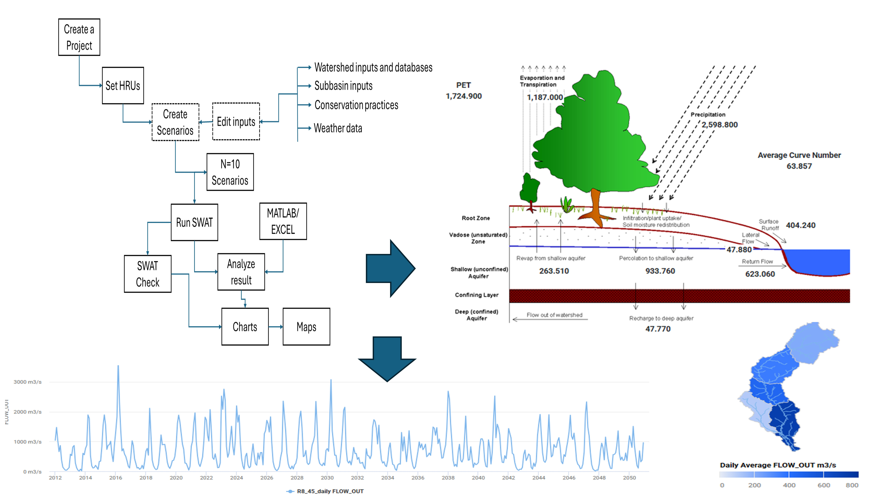
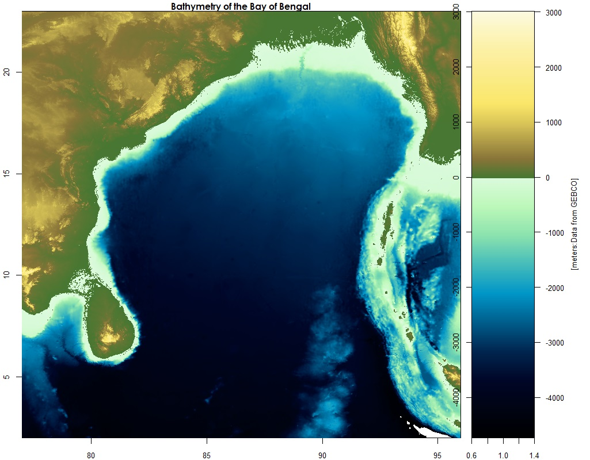
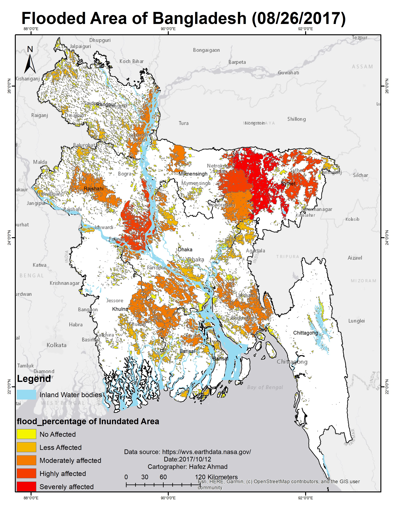
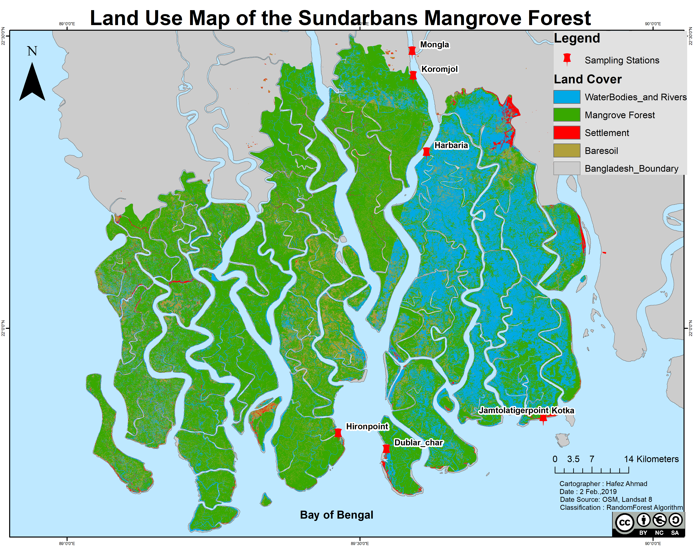
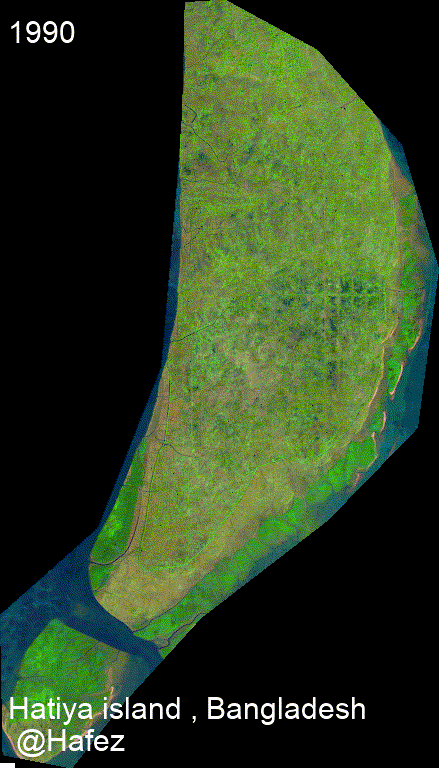

Teaching
Teaching
Welcome to the teaching section! Here, I share resources, tutorials, and guides to help you learn and grow in various fields, including Oceanography, Data Analysis, and Programming. Stay tuned for updates!
Teaching Content
Courses and Syllabi
Course 1: Introduction to Oceanography
- Description: This course provides an overview of oceanographic principles, including physical, chemical, and biological aspects of the ocean.
- Syllabus: Download Syllabus (PDF)
Course 2: Data Analysis in Environmental Science
- Description: Learn data analysis techniques using R and Python, focusing on environmental datasets.
- Syllabus: Download Syllabus (PDF)
Course 3: Advanced Ecological Modeling
- Description: Explore advanced modeling techniques for ecological and environmental systems.
- Syllabus: Download Syllabus (PDF)
Course 4: Remote Sensing and GIS for Environmental Applications
- Description: Explore the use of remote sensing and GIS technologies in environmental research and applications.
- Syllabus: Download Syllabus (PDF)
Course 5: Oceanographic and Atmospheric Data Analysis
- Description: Learn techniques for analyzing oceanographic and atmospheric datasets.
- Syllabus: Download Syllabus (PDF)
Course 6: Hydrological and Coastal Modeling
- Description: Study hydrological and coastal systems using advanced modeling techniques.
- Syllabus: Download Syllabus (PDF)
Course 7: Geospatial Big Data Analytics and Cloud Computing
- Description: Dive into geospatial big data analytics and cloud computing platforms like Google Earth Engine.
- Syllabus: Download Syllabus (PDF)
Course 8: Artificial Intelligence and Deep Learning in Earth Observation
- Description: Apply AI and deep learning techniques to Earth observation data.
- Syllabus: Download Syllabus (PDF)
Course 9: Applications of Remote Sensing in Marine and Coastal Systems
- Description: Investigate the applications of remote sensing in marine and coastal environments.
- Syllabus: Download Syllabus (PDF)
Courses Taught
- Introduction to Environmental Science
- Remote Sensing and GIS for Environmental Applications
- Advanced Topics in Geosciences
Topics of Interest for Future Teaching
- Artificial Intelligence and Deep Learning in Earth Observation
- Geospatial Big Data Analytics and Cloud Computing (e.g., Google Earth Engine)
- Oceanographic and Atmospheric Data Analysis
- Hydrological and Coastal Modeling
- Data Science in Environmental Research (Python, R, SQL)
- Geostatistics and Predictive Environmental Modeling
- Applications of Remote Sensing in Marine and Coastal Systems
Hydrologic and Oceanographic Modeling
The Soil & Water Assessment Tool (SWAT)

SWAT is a river basin-scale model developed to quantify the impact of land management practices on water, sediment, and agricultural chemical yields in large complex watersheds with varying soils, land use, and management conditions over long periods of time. My work with SWAT includes:
- Watershed delineation and hydrologic response unit (HRU) definition
- Calibration and validation using SWAT-CUP
- Scenario analysis for climate change impacts on water resources
- Integration with GIS for spatial analysis of model outputs
- Assessment of best management practices (BMPs) for reducing nutrient loading

Environmental Fluid Dynamics Code (EFDC)

EFDC is a state-of-the-art hydrodynamic model that can be used to simulate aquatic systems in one, two, and three dimensions. It has evolved into one of the most widely used and technically defensible hydrodynamic models in the world. In my research, I utilize EFDC for:
- Simulating water circulation patterns in coastal environments
- Modeling sediment transport processes
- Analyzing water quality parameters including dissolved oxygen, nutrients, and contaminants
- Studying thermal dispersion from industrial outfalls
- Investigating the impacts of engineering modifications on estuarine systems
Ocean Circulation Modeling

Ocean models are numerical models that simulate the physical processes governing ocean circulation. These models play a crucial role in understanding ocean dynamics, climate patterns, and marine ecosystems. My experience includes working with:
- Regional Ocean Modeling System (ROMS) - A free-surface, terrain-following, primitive equations ocean model used by the scientific community for a diverse range of applications
- HYCOM (HYbrid Coordinate Ocean Model) - A data-assimilative hybrid isopycnal-sigma-pressure coordinate ocean model
- Modular Ocean Model (MOM) - A numerical ocean model based on the hydrostatic primitive equations
- NEMO (Nucleus for European Modelling of the Ocean) - A state-of-the-art modeling framework for oceanographic research and operational oceanography
My modeling work focuses on:
- Simulating ocean circulation patterns in the Bay of Bengal and Gulf of Mexico
- Analyzing mesoscale eddies and their impact on primary productivity
- Studying the influence of freshwater discharge on coastal dynamics
- Investigating climate change impacts on ocean circulation
- Developing machine learning approaches to enhance model parameterizations
Ocean models represent a synthesis of our theoretical understanding, observational data, and computational capabilities. They enable us to explore complex ocean processes across various temporal and spatial scales, from local coastal dynamics to global circulation patterns. Through my research, I aim to advance our understanding of ocean processes and contribute to more accurate predictions of oceanographic phenomena.
GIS and Remote Sensing

Remote Sensing (RS) has a wide range of applications in the field of physical, biological, coastal, and satellite oceanography. RS in Oceanographic research is the collection of oceanographic, monitoring of coastal and oceanic processes data, and analysis of various processes using space-borne and airborne sensors.
Application of Remote Sensing Data in Oceanographic Research
Some Important Variables from Remote Sensing Data
| No. | Parameters | Satellite Sensors | Uses |
|---|---|---|---|
| 1 | Sea surface temperature (SST) | MODIS, AMSRE, TMI | Helps in the study of climate change and weather forecasting. |
| 2 | Total suspended solids (TSSs) | DEIMOS-1, LANDSAT, ASTER | Provides information on hydrodynamic modeling of the coast. |
| 3 | Sea surface salinity (SSS) | ESA Soil Moisture and Ocean Salinity (SMOS), SMAP SSS | Helps in monitoring salinity. |
| 4 | Chlorophyll content | SeaWiFS, IKONOS, IRS P4 OCM | Helps in monitoring phytoplankton blooms and concentration of phytoplankton. |
| 5 | Sea surface height (SSH), wind speed | Topex/Poseidon, ERS-1, ERS-2 | Helps in monitoring ocean currents, eddies, and waves. |
| 6 | Surface current, front, circulation | POES/AVHRR, GOES/IMAGER, JASON-1 | Helps in monitoring ocean currents, waves, and wave and current modeling. |
| 7 | Potential fishing zone | NOAA AVHRR, IRS OCM | Helps in monitoring fishing zones. |
Example Applications
- Saint Martin Island Land Use Land Cover Map

St. Martin’s Island is a small island in the northeastern part of the Bay of Bengal, about 9 km south of the tip of the Cox’s Bazar-Teknaf peninsula, and forming the southernmost part of Bangladesh. It is enriched with numerous marine biotic and abiotic resources including many species of commercial fishes, coral reefs, marine algae, mollusks, etc., that play a significant role in the socio-economic development of the islanders. The socio-economic conditions of the local community are completely dependent on both marine resources and tourism.
- Land Use Land Cover Map of the Sundarbans Mangrove Forest, Bangladesh

Sundarbans is the largest natural mangrove forest in the world. It lies between latitude 21° 27′ 30″ and 22° 30′ 00″ North and longitude 89° 02′ 00″ and 90° 00′ 00″ East, with a total area of 10,000 km². Sixty percent of the property lies in Bangladesh and the rest in India.
Image Classification Methods
Random forest (RF) is a supervised learning algorithm. The “forest” it builds is an ensemble of decision trees, usually trained with the “bagging” method (Breiman, 2001). This algorithm is used for satellite image classification using Google Earth Engine and Landsat 8 imageries. Breiman proposed RF in 2001 for classification and clustering. RF grows many decision trees for classification. To classify a new object, the input vector is run through each decision tree in the forest.

Timelapse for a small island in Bangladesh.